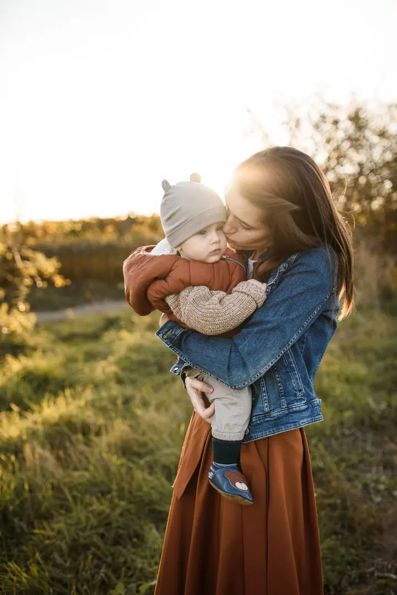
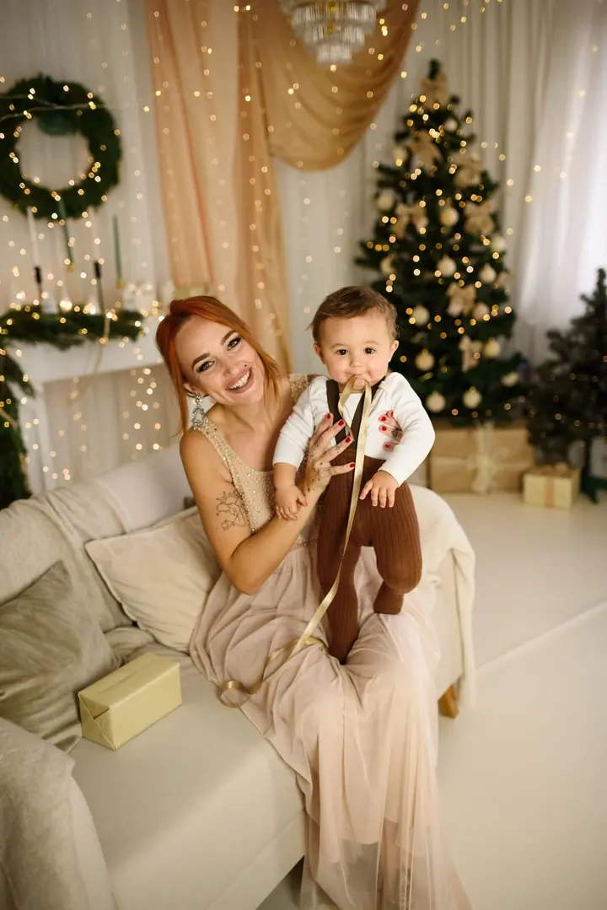

Svatební focení
Budu po vašem boku celý den, a přitom nebudu narušovat chod svatby. Pomůžu vám s harmonogramem, při focení vás jemně navedu a fotím na dva foťáky, aby byly vaše fotky v bezpečí.

Jmenuji se Anna Lenčéš a jsem svatební a rodinná fotografka ve Vyškově. Fotím svatby, rodiny s dětmi i první dny miminek. Do umělých póz vás nutit nebudu, focením vás je…
Rezervovat termínJsem máma dvou smíšků, optometristka, která svou práci miluje, a především obří snílek. Focením si plním další sen: vyprávím váš příběh skrze fotky.


Vyrostla jsem na horách, a asi proto miluju přírodu, západy slunce, emoce a smích. Nejčastěji mě potkáte ve Vyškově, v Brně a okolí, ale často se vracím za rodinou do Jeseníků, kde se s vámi ráda potkám. Ráda skáču před foťákem a možná ještě raději se válím v trávě s foťákem kolem krku.
Nejvíc mě baví zachytit cit mezi partnery a vztah mezi rodiči a jejich dětmi. Ticho u focení nebude, chci, abyste si spolu s fotkami odnesli i zážitek. Každý měsíc fotím jen omezený počet klientů, abych se vám mohla naplno věnovat.
Co fotím
Budu po vašem boku celý den, a přitom nebudu narušovat chod svatby. Pomůžu vám s harmonogramem, při focení vás jemně navedu a fotím na dva foťáky, aby byly vaše fotky v bezpečí.
Fotíme na louce, v lese nebo na vašem oblíbeném místě, klidně i s pejskem. Nechte děti pobíhat, já zachytím vaše chvíle takové, jaké opravdu jsou.
Přijedu k vám domů ve chvíli, kdy se na to budete cítit, a dopřeju vám dost času na kojení i spinkání. Každou galerii doplním o detaily ručiček, nožiček a vlásků. Fotit můžeme i v ateliéru.
Zásnuby, těhotenské bříško nebo obyčejně neobyčejné chvíle vaší lásky. Zamilované pohledy a něžné doteky společně přeneseme na fotografie.
Postup
Vyplňte krátký formulář a já vám pošlu přehlednou nabídku na míru.
Probereme vaše představy osobně nebo online, ať víte, co od focení čekat.
U svateb termín potvrdí podpis smlouvy a záloha. Před svatbou se ještě potkáme na předsvatební schůzce a focení.
Vy si den užijete, já fotím. U svateb dostanete ochutnávku do týdne a celou galerii do čtyř týdnů.
Otázky
Nejčastěji ve Vyškově, v Brně a okolí, v Jihomoravském a Olomouckém kraji a v Jeseníkách. Na svatbu za vámi ale přijedu klidně až na konec světa.
Ano. Ke každé fotce dostanete vždy i černobílou variantu zdarma. Věřím, že teprve v ní se do fotky otiskne duše.
Od komorních obřadů po celodenní focení se cena pohybuje mezi 9 900 a 25 000 Kč. Součástí je předsvatební schůzka, černobílé fotky a podle balíčku i tisk fotek nebo fotokniha.
U vás doma, ve chvíli, kdy se na to budete cítit. Nepořádek stačí odsunout stranou. Pokud se nechcete o nic starat nebo máte málo místa, můžeme fotit i v ateliéru.
Nemusíte. Focením vás jemně provedu, poradím a zbytek nechám plynout. Děti můžou pobíhat a pejsek je samozřejmě vítaný.